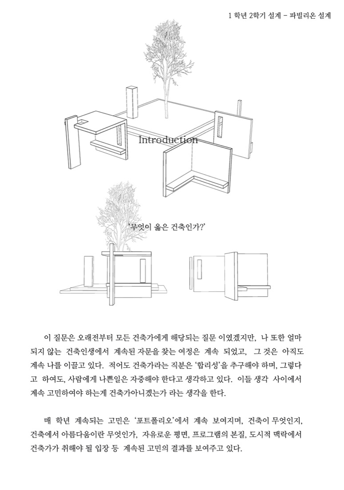
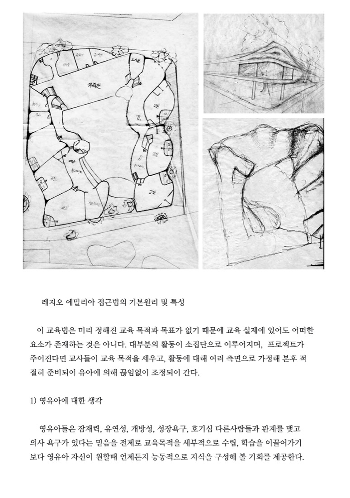
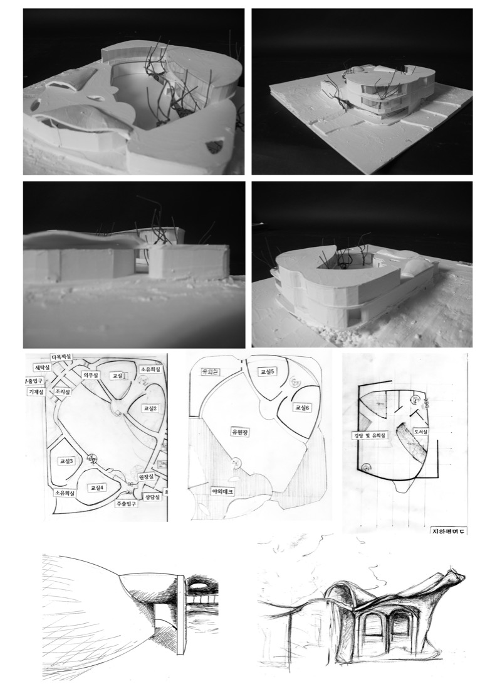

레지오 에밀리아 접근법(Reggio Emilia Approach)은 2차 세계 대전이 끝날 무렵, 1945년 이탈리아 북부 로마나 지역의 레지오 에밀리아라는 작은 도시에서 시작된 유아교육이다.
레지오에서는 학교와 가족 간의 유대를 강조하며 학교를 성인과 유아 간의 생활과 관계를 공유, 통합하고 가정과 지역사회로 확장해 나가는 곳으로 본다. 때문에 유아를 중심으로 유아, 교사, 가족을 교육의 세 요소로 간주하고 이 세 요소 간의 ‘관계에 기초한 교육’ ‘의사소통’ ‘상호작용’을 강조하는 철학적 이념을 갖고 있다.

유기적 관계로서의 학교체제
교육은 각 개별 영유아에게 초점을 두어야 하지만 또래, 교사, 가족, 학교환경, 지역사회와의 관계 속에서 고려되어야 한다.
유치원은 유아, 교사, 학부모 모두를 교육하는 곳, 유아를 중심으로 의사소통의 연대감 수립에 근본을 둔다. 부모의 참여를 의무로 하며 교사, 부모, 유아, 사회와의 ‘관계’ ‘의사소통’ ‘상호작용’에 중점을 둔다.
교육법에 의한 건축환경의 역할 및 설계 목표
각 학급은 공용 공간인 피아자(Piazza)로 통해 있고, 부엌은 내부가 보이도록 조성, 안뜰, 각 교실에서 밖으로 난 창으로 지역사회 접근이 용이하게 설계, 각 학급은 아뜰리에와 작업 공간을 마련한다.

… 위해 무엇을 사용하는가를 정확히 알아야 한다고 생각합니다.
같은 공간을 어떻게 어디까지 디자인으로 증폭시킬 수 있나, 어떠한 느낌을 주기…
우리는 무게감 있게 이 사실을 받아들여야 한다고 생각합니다.
2013, 프랑스에서, 친애하는 교수님께
Deuxions; 권태완 올림